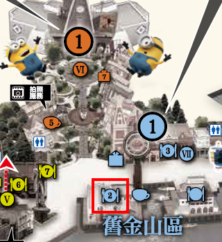
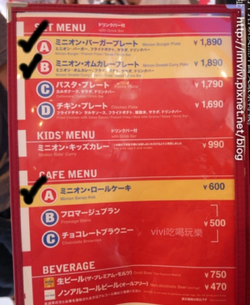
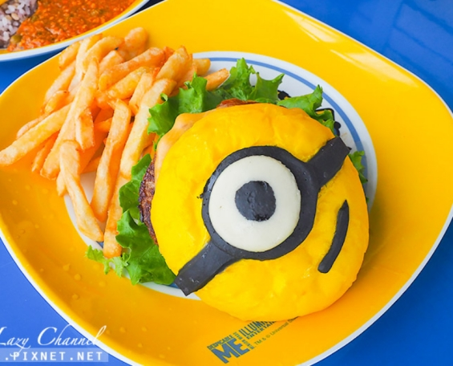
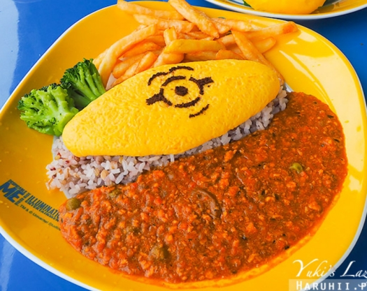
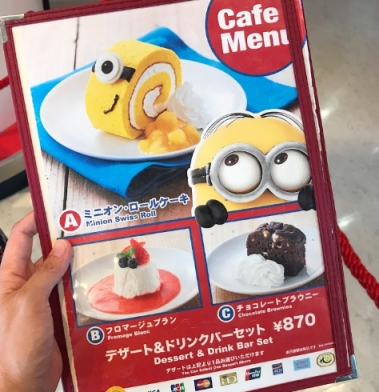
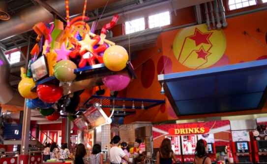

快樂咖啡廳 ハピネス・カフェ [官網]


要先點餐才可進入用餐區

A 小小兵漢堡餐(附飲料) ミニオン・バーガープレート 1890

B 小小兵蛋包咖哩餐(附飲料) ミニオン・オムカレープレート 1890 推

小小兵蛋糕捲 ミニオン・ロールケーキ 600

泡芙 ミニオン・シュークリーム 580

デザート＆ドリンクバーセット 為甜點+飲料 870

結完帳後, 店員會給小張的餐券, 拿著去給內部廚房區域的工作人員領餐

1.拿著餐券給廚房區域的工作人員
2.拿取沙拉
3.拿取飲料(無飲供應)